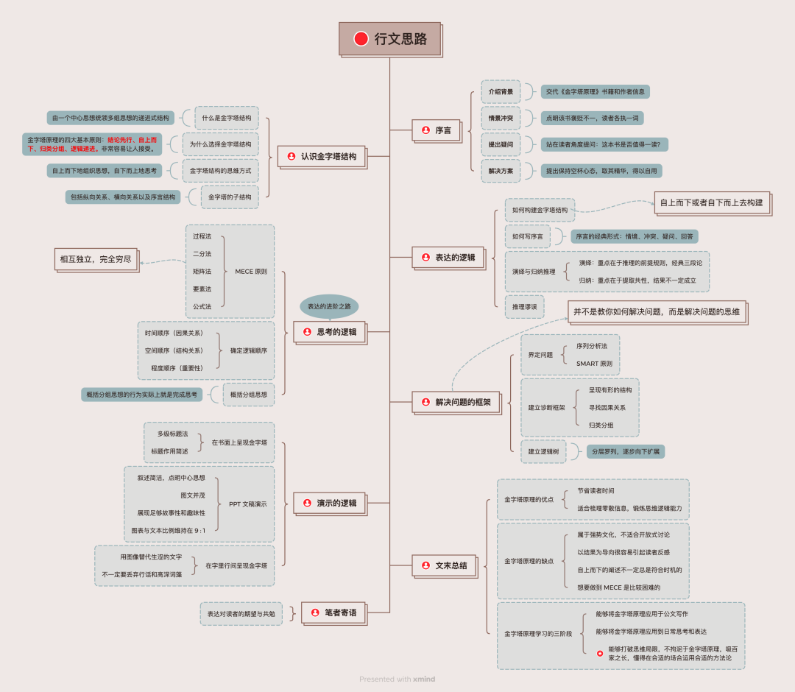
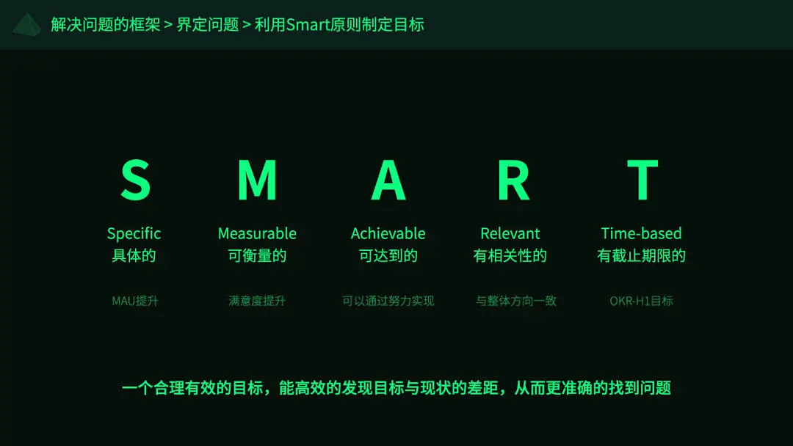
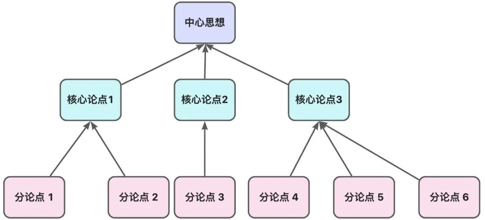

序言
《金字塔原理》一书出自麦肯锡公司第一位女性管理顾问芭芭拉·明托。虽然这本书出版至今已经超过 40 年，但是仍然倍受人推崇，从某公司将其作为公司内部四大名著之一就可见一斑。当然也有很多人持质疑态度，比如秋叶大叔对此书提出了 27 点尖锐的意见，认为它被世人刻意抬高神化，驳斥其一无是处。那这本书到底值不值得读呢？其实每本书的受众和适用范围都不尽相同，既然这本书能够流传至今，已经证明其价值所在。所以我们应该要做的是怀有一颗空杯之心，取其精华，为己所用。言归正传，书中所讲的金字塔原理，是一种重点突出、逻辑清晰、主次分明的逻辑思路、表达方式。它的基本结构是：中心思想明确，结论先行，以上统下，归类分组，逻辑递进。先重要后次要，先全局后细节，先结论后原因，先结果后过程。曾经在中学时代被议论文虐得死去活来的同学，一定有种似曾相识的感觉，因为你会发现金字塔原理很多理念都和语文老师所讲的写作技巧类似。然而，那时候很多同学写作文都是公式化套用模板，导致文章徒有其形，没有神韵。所以我写这篇文章的目的就是希望能够帮助更多同学了解金字塔原理并合理应用，不只是写作，更是要着眼于思考和表达。本文将围绕认识金字塔结构、表达的逻辑、思考的逻辑、解决问题的框架、演示的逻辑这几个方面带领大家深入学习金字塔原理，具体行文思路可以参见如下思维导图。
在介绍金字塔原理之前，我们先了解一下什么是金字塔结构。
金字塔结构，顾名思义就是一个自顶向下愈加厚重，自底向上更显精简的三角锥体结构，抽象到思维层面可以认为是由一个中心思想统领多组思想的递进式结构。在这种结构中，思想之间的联系方式可以是纵向的，即任一层次的思想都是对其下一层次思想的概括；也可以是横向的，即多个思想可以按照逻辑顺序共同组成属于对应逻辑范畴的分组，而后被并列组织在一起支持上层思想。由此得出金字塔原理：任何事情都可以归纳出一个中心论点，而此中心论点可由三至七个论据支持，这些一级论据本身也可以是个论点，被二级的三至七个论据支持，如此延伸，状如金字塔。若我们借用这种金字塔结构来组织文章，那么起始表达的主要思想将使读者对作者的表述产生某种疑问，而主要思想的下一层次思想将对此问题作出回答。通过不断地进行疑问／回答式的对话，读者就可以了解文章中的所有思想，并能够快速判断该文章的观点是否合理或者偏激。虽然通过金字塔结构，能够较为精确简厄地表达自己的观点，但是真正想合理应用就必须迫使自己先好好想清楚自己的次要思想是否符合逻辑顺序，是否能够支撑中心思想等问题。所以对于大多数人来说，这不仅需要一定的毅力，更需要长期的训练和积累。
事实上，人类的大脑总是会自动将同一时间发现的所有事物以某种特定的逻辑顺序组织起来，这意味着当我们在接收到若干信息时，会不自觉地认为这些信息是有共性的，并主动通过自己习惯的思维模式去总结出一定的规律或者逻辑关系。这一生理特征是为什么呢？其实是因为大脑在接收到大量信息时，为了能够更好地记忆和理解内容，自发产生的一种逻辑归纳组织行为。但是大脑处理和记忆信息的能力是有限的；根据美国心理学家的一些实验数据表明，大多数人脑短期内能够同时记忆的条目不超过 7 个，最好将数量控制在 1 - 3 个，这是最容易被记住的。举个例子，中国古代的一些能人术士，能够凭借观星占卜之术来提前预测祸福，这实际上就是术士根据若干天体运行位置规律总结出来各类福祸征兆对应的星象。这也说明古人面对星体之间组成的星象和运行轨迹，能够总结出来一定规律。但是假设他们当时能够观测到太阳系的大部分星系，面对这种指数级爆炸的星体信息，一般人的大脑也不可能在海量星体中进行联想关联和规律总结。所以其实这就是为什么选择金字塔结构。它可以帮助我们将大量的信息根据主次层次、逻辑顺序或者递进关系等完成归纳组织。它遵循结论先行，自上而下的原则，并且任一层次的思想都能够概括其下一层思想，同一层次的思想按照特定逻辑顺序层层递进，让人非常容易接受和理解。下面举例说明使用金字塔结构的优势所在。假设两人在沟通时逻辑混乱，思路不清晰，如下表达：如上所示，如果对方直接将大量信息以没有任何逻辑可言的方式传达给你，你第一时间肯定很晕，然后自己要一条一条信息去梳理对方想表达的诉求和支撑的依据。那如果换一种方式进行表达呢？如下所示：可以看到，如果对方采用金字塔原理来表达想法，你可以第一时间清楚对方的诉求是什么，并且可以迅速了解为什么。很明显，对方的表达是很有逻辑且容易让人接受的。那么这种表达真的遵循了金字塔原理的几大原则吗？简单分析如下：结论很显然，之所以第二种表达方式看起来更加容易让人接受，就是利用了金字塔原理的四大基本原则：结论先行、自上而下、归类分组、逻辑递进。至于具体是怎样构建金字塔结构的，我们将在后面的章节学习到，这里不赘述。
自上而下的意思是，我们总是先提出一个总结性思想，然后再提出若干被总结的具体思想。因为读者的大脑只能逐句理解作者表达的思想。他们会假定一同出现的思想在逻辑上存在某种关联。如果不预先告诉他们这种逻辑关系，读者会自动从中寻找某种共同点，将你表达的思想进行归类组合。这样的结果就会导致理解出来的意思千差万别。而这个从具体的思想中进行归类分组，逻辑梳理的过程就是自下而上地思考，直到能够支撑你的总结性思想，即中心思想。具体来讲，你需要思考哪几个句子具有某种共同的逻辑关系，而这种逻辑关系要求这几个句子共同解释或支持某一个单一思想。所以你就需要不断地归类和概括，直到没有能够与之关联的思想可以继续归纳总结。
下面再来深入地了解下金字塔内部的子结构，它具有以下子结构模式：主题和子主题之间是纵向关系，子主题之间是横向关系，除此之外还有一种独立的序言结构。纵向关系能很好地吸引读者的注意力，通过纵向联系，可以引导一种疑问 / 问答式的对话。一来可以引发读者兴趣，二来可以让读者按照你的思路产生符合逻辑的反应。当考虑在下一结构层次上如何表述时，必须保证你的表述能够回答在其上一个结构层次的表述所引起的疑问，同时还必须保证表述符合逻辑。也就是说，表述必须具有明确的归纳或演绎关系，这种结构是横向关系。还有一种是序言结构，为了保证你的文章能够引起读者的注意，你需要通过讲故事的形式来为读者铺垫一些需要提前了解的信息或者背景，进而将其思想带到设定的框架，帮助我们更好地传递所要表达的思想和观点。综上所述，金字塔所表达的内容的顺序：首先通过讲故事的序言交代主题相关的背景并引出问题，然后说出你对这个问题看法或者解决方案，再层层递进，逐步展开，提出详细解释和有效证据支撑。在纵向上，下一层是对上一层内容的展开，在横向上，每一组要表达的内容都属于同一逻辑范畴的，并且按照一定的逻辑顺序分别组织起来。前面我们学习了金字塔结构相关的基本概念，现在就来了解一下如何构建表达的逻辑。在这之前，我们需要了解如何构建金字塔结构，如何按照金字塔子结构编写序言，如何按照演绎和归纳的方法横向组织具体内容等等。
表达能力包括口头表达能力和书面表达能力，这里主要讨论的是书面表达。显然，主次鲜明、结构清晰的表达方式肯定更容易让对方接受，传达的信息过少或者过多但没有条理其实在书面表达中都是非常忌讳的。根据第一章节，我们知道金字塔结构就可以帮助我们快速清晰表达思想和观点，那具体怎么做呢，接下来就一起学习按照以下五个步骤构建金字塔结构：画出主题方框，在方框里写出你将要讨论的主题；
确定主要问题，考虑要回答读者什么问题；
梳理答案，写出对该问题的回答；
说明情境，也就是事件的背景；
指出冲突，引出读者的疑问，例如发生了某种意外 / 问题，或出现了某种明显的逻辑不一致的变化。
为了更好解释这个流程，这里用小米除螨仪的实例来演示如何自上而下构建金字塔结构：特别地，如果你自己还不清楚到底想要讲什么，但是有一堆散乱的信息需要整理总结，那么你可以采用另外一种方式，即自下而上构建的方法完成金字塔结构。还是上面的例子，你可以这样去构建：
上面了解了金字塔结构如何构建，这里再讨论一下特殊的金字塔子结构，即序言。文章的序言部分是通过概述读者已知的信息，与文章将要回答的问题之间建立某种关联。文章的序言部分最好讲故事的形式，也就是说，序言部分必须先引入某种读者熟悉的 "情境"，说明发生的"冲突"，并由此引发读者的"疑问"，然后再对该"疑问"作出"回答"。正如前文所言，序言结构主要是用来吸引读者兴趣，带入作者自己设定的框架中去。本篇文章的序言就是采用了同样的序言结构来完成：情境：“《金字塔原理》一书出自麦肯锡公司第一位女性管理顾问芭芭拉·明托。虽然这本书出版至今已经超过 40 年。” ——介绍《金字塔原理》书籍背景，将读者拉入情境。
冲突：“虽然这本书出版至今已经超过 40 年，但是仍然倍受人推崇，从美团将其作为公司内部四大名著之一就可见一斑。当然也有很多人持质疑态度，比如秋叶大叔对此书提出了 27 点尖锐的意见，认为它被世人刻意抬高神化，驳斥其一无是处。” ——世人对这本书褒贬不一，点明冲突。
疑问：“那这本书到底值不值得读呢？” ——引出读者的疑问。
回答：“其实每本书的受众和适用范围都不尽相同，既然这本书能够流传至今，已经证明其价值所在。所以我们应该要做的是怀有一颗空杯之心，取其精华，为己所用。” ——最后对疑问做出了回答。
综上所述，序言的经典形式是情境、冲突、疑问、回答。当然，各部分的顺序可以有变化，以创造文章的不同风格。比如你可以开头直接交代冲突，提出疑问然后再根据情景来铺垫出自己的回答。也可以先提出自己对某个问题的解决方式，然后再娓娓道来该问题解决的情景等等诸如此类。下面要讲的知识点对于理工科同学来说应该很熟悉，因为这两种推理方式在高中生物和数学就已经学过类似概念了。下面详细解释，也许会带给你不一样的灵感。
值得说明的是，有且仅有两种逻辑关系，分别是演绎推理和归纳推理。演绎推理就是从普遍性的理论知识推导出个别、特殊的现象比如说标准式三段论：大前提——小前提——结论。归纳推理就是从许多个别的事物中概括出一般概念、原则或方法。通俗来讲就是从一堆事物里，归纳一些共性出来。如下图右侧关于归纳推理的例子，结论就是：亚洲人在一些行业里占据主导地位。演绎推理重点在于推理的前提规则，它是根据规则来分析情况，最后得出结论的。一旦规则错则全错。比如下图右侧的例子，鸟都是会飞的，这个前提规则错了根据这个规则，推理出来鸵鸟也会飞的结果就是错的。演绎推理想要成立，要求逻辑天然成立且唯一。归纳推理重点在于提取共性，结果不一定成立。就比如下图右侧的案例：经过一定范围观察，所有的乌鸦都是黑色的 ，因此天下乌鸦一般黑。天下乌鸦一般黑，这个结论肯定是不成立的 但可以被认可。本身我们就无法穷尽天下一切乌鸦，因此足够的样本下，推导出的样本一致性可以被一定程度认可。总结来看，在演绎过程中，每个思想均由前一个思想导出；而在归纳过程中则不存在这种关系。当进行演绎推理时，推理过程的第二个思想必须是对第一个思想的主语或谓语作出的评述。归纳推理比演绎推理难得多，因为归纳推理更需要创造性的思维。在进行归纳推理时，大脑首先注意到若干不同事物（思想、事件、事 ）具有某种共性，然后将其归类于同一个组中，并说明其共性。通常人们在思维时会更多地采用演绎推理的方法。演绎推理法也是人们在进行解决问题的思考时通常采用的方法，因此也是人们在表达自己的思想时愿意采用的方法。但是建议将演绎推理放在金字塔结构中较低的层次上。演绎法便于思考，对读者来讲却并不利于理解，因为推理过程非常繁琐，人们心里往往会着急，快告诉我结论吧。所以在关键句层次上要尽量避免使用演绎法，使用归纳法取而代之。而在进行归纳推理时，最重要的就是找到一个能够表示该组所有思想的词汇，这个词必须是一个复数名词。这是因为所有表示一类事物的词都是名词，并且该组思想中必定有一个以上该类思想。比如，上文所说的例子中就是“一定范围内的乌鸦”。无论是演绎推理还是归纳推理，需要注意避免一些推理谬误，否则文章的权威性和说服力都将大大降低。
举一个关于演绎推理的例子：如果老王快要破产了，他就会把他的资产卖掉。现在老王在卖他的资产。因此，老王快要破产了。为什么这个论证是错误的呢？因为隔壁老王并不是只有在快要破产了，才会卖资产，他的企业要转型了，或者他觉得现在的资产价格最高，也一样会考虑卖资产的。这种谬误称为肯定后项。再看一个归纳推理的例子：没有人证明某俱乐部在某场比赛的奇怪行为不是假赛。我们可以肯定地断言该俱乐部该场比赛假赛。显然，这个前提得到的信息只能是我们不知道该队伍有没有假赛，而不是结论的肯定性推断。如果一个论证的前提仅仅以缺少与结论相反的证据为由，那么该论证就犯了诉诸无知谬误。这样的前提为它们所支持的结论提供了很不可靠的理由，因此该论证不成立。我们的大脑对演绎和归纳推理有着一种完整性的期待，这种期待使读者向前预测，试图揣测作者的下一个句子。如果读者的预期与作者的逻辑表述不一致，可能会感到困惑和烦躁。因此，在进行归纳或演绎推理之前，我们应先向读者介绍我们的主题思想，以便读者能够更加轻松容易接受我们的思想或者观点。总之，在建立推理关系时，我们需要评述前一步骤并得出推论；在归纳关系中，我们要注意句子主语或谓语之间的相同点并从中推导。为了避免读者困惑，请在阐述归纳或演绎过程之前明确主题思想，以便读者能够更好地理解和代入。金字塔原理应用于具体写作的过程中，通常只需稍加练习，便可毫不费力地确定文章的总体架构。但这只是第一步，还需要进一步思考，以保证每组中的各个思想之间确实存在某种内在的逻辑关系，然后再明确说明这种逻辑关系的隐含意义。审视每个思想是思考过程的核心，但也是一项非常艰难的工作。
“合并同类项”和“集合运算法则”将帮助你理解什么是 MECE 原则。
在学习思考的逻辑之前先了解一个来自本书的概念：MECE 原则，意思是“相互独立，完全穷尽”。MECE 是把一个整体思想分解为若干个更细的思想的方法。它主要有两条原则：第一条是完整性，说的是分解的过程中不要漏项，要保证完整性；第二条是独立性，强调了每项之间要独立，每项之间不要有交叉重叠。举一个简单的例子，鸿蒙系统、安卓系统、 IOS、塞班系统等组成手机操作系统这样一个完整集合，其中列举的每一个元素都是相互独立并且整体能够穷尽所有操作系统的范畴。要想构建金字塔结构，就必须遵循这一原则。我们在思考某些问题时，可能会遇到成百上千的信息条目，这时候就需要将这些信息通过一些逻辑关系来进行归类分组，使得所有信息能够分门别类；然后对每个分组都提炼出一个中心思想来概括其共性，这样就形成了一个合理的金字塔结构。但是实际上想要遵循这一原则是有一定难度的，这里我简单列举如何保证 MECE 原则的五种方式：① 过程法：按照事情发展变化的过程进行拆解，拆解到最终出现结果。③ 矩阵法：就是二分法的升级，二分法用两次，交叉形成 4 个象限。像类似重要性&紧急性的矩阵图、波士顿矩阵、SWOT 分析图等就是典型的矩阵法。④ 要素法：主要看核心对象是由什么要素构成，重点在于分类一定要在一个纬度上。比如描述同一个群体，按照不同的要素，都能进行不同的分类。此方法在做调研问卷的时候用得最多。⑤ 公式法：按照现成的数学公式进行拆分，数学公式本身就有足够严谨的特征。直接用即可，重点在于你用的公式够不够专业，是否贴合实际场景。
上文学提到了通过五种常见的方法来保障 MECE 原则，算是一些基础方法论，下面将教会大家如何利用特定的逻辑顺序来帮助我们归纳组织这些看似杂乱无章的信息或者思想，最终达到 MECE 的效果。事实上，组织思想的方式不是随意堆砌，而是凭借对其中逻辑关系的梳理和挑选，将它们有机地组织在一起。大脑能够进行的分组分析活动有以下三种：时间顺序（因果关系）：这种逻辑顺序用于表达某个事件或情况的原因和结果之间的关系。例如，假设我们写一篇关于空气污染的文章。我们可以首先列举出导致空气污染的各种因素，如工业排放、交通尾气、能源消耗等，然后指出它们对环境和健康的影响，如空气质量下降、健康问题增加。通过明确前因后果关系，我们能够清晰地阐述造成某种结果的原因集合，这些前因后果就形成一个完整的过程。
空间顺序（结构关系）：这种逻辑顺序用于将一个整体概念分解为其组成部分，以便更好地理解和阐述。例如，我们写一篇关于电影制作的文章。我们可以将电影制作过程分为剧本创作、拍摄、剪辑、音效等几个部分，然后逐一介绍每个部分的重要性和作用。通过将整体分割为部分，我们能够有条理地展示和解释一个复杂概念的各个方面。
程度顺序（重要性）：这种逻辑顺序是指根据事物的重要性、影响力或优先级进行组织。例如，在介绍一个产品的特点时，我们可以按照从最重要到次重要的顺序进行组织。这样的组织方式可以帮助读者更好地理解产品的核心价值和关键特点。另外，当我们针对一个问题提出解决方案时，我们可以按照解决方案的优先级来进行组织，先提出最重要的解决方案，然后逐渐展开其他次要的解决方案。通过重要性顺序，我们能够更好地突出关键问题和解决方案，使读者更容易理解和接受。
检查逻辑顺序是确保某一分组有效性的重要手段。当碰到一系列需要归纳的思想时，想要快速浏览并找出其真正意义，就得先判断这些思想中是否存在某种逻辑顺序（如时间顺序、结构顺序、重要性顺序）；如果没有，再确认能否找到该组思想的基础（如过程、结构、类别）并采用适当的逻辑顺序组织起来。若条目过多，就需要判断能否发现它们之间的共同点，并以此归纳为类别，然后按逻辑顺序进行归纳。当确认完一组思想的有效性和完整性后，就可以得出逻辑推论。此时，可以通过 MECE 原则来检验自己的逻辑梳理过程是否有遗漏或者不妥当的地方，相互印证直至趋于完善。
概括分组思想的行为实际上就是完成思考的行为，很多作者在写作时只是简单地将一些思想组合在一起，而没有进行充分的思考。他们凭感觉将一些没有明确关系或者只具有一般性关系的思想罗列在一起，这就是为什么很多同学在写议论文时长篇大论，滔滔不绝，但是结果并不如意的原因。虽然你用对了方法，采用了结论先行，先抛出中心思想后详细阐述的方式来写作，但是你的次要思想没有逻辑顺序和关联性，无法达到层层递进的效果，更无法满足相互独立，完全穷尽的 MECE 原则。通读自己的文章，你如果连自己都说服不了，那谈何让别人信服。有时一些具有共性的句子含义难以被概括时，我们就需要进行所谓的归纳跃进，以便将其含义明确化。这样可以强迫自己认真思考和检查每一组思想，向读者表达的思想将会非常清晰、明确、具体和全面。这一点想要做到非常难得，但是也是我认为对于自己思考问题最有帮助的一点，只有你自己先想清楚了，才能让自己的想法被人理解，信任。这也是我们为什么需要学习 MECE 原则和逻辑顺序的原因。当我们坐下来写一篇短文时，可以利用之前讲的情境、冲突、疑问和回答的模式以及演绎归纳等方法，使自己的思想更加有条理。然而对长一些的文章来说，比如研究报告、项目计划书和咨询建议，写作过程就不会那么顺利了。也许会有一个长时间收集资料的过程，也许会涉及好几位作者进行协作，也许有合稿的过程。这时候就需要先界定和分析问题，再将解决方案写出来与人交流，如果有这方面经验的人会发现，一旦完成了这些步骤，真正开始写作就会很轻松了。本章节主要讨论如何界定问题及如何分析问题。
有一种非常有效的界定问题的框架叫序列分析法（连续分析法）。判定问题是否存在，通常要看经过一定努力得到的结果和希望得到的结果之间是否有差距，这种差距称之为非期望结果 (R1) 。由非期望结果 (R1) 想得到的其他结果称为期望结果 (R2) 。解决方案则是指如何从 R1 到 R2 。我们想要的是什么？(R2)
问题界定包含的四个要素分别是：切入点／序幕 、困扰事件、R1 (非期望结果)、 R2 (期望结果) 。如果把界定问题想象成舞台剧，那么某一特定地点，这就是切入点或序幕。某一事件的发生使剧情得以展开，这就是困扰事件。这两个要素的目的是将观众或者读者带入到剧情里面，并且有吸引点。非期望结果 R1 是指读者需要设法解决或有可能面临的问题，或者是有可能抓住的机会。期望结果R2是指读者希望其现有的结构或流程产生期望结果，一般需要对 R2 进行具体和定量的描述，才能判别结果是否是期望结果。一般我们会在序言中界定问题，比较困难的是从非期望结果 R1 过渡到期望结果 R2 的部分，会面临的问题主要包括：不知道如何从 R1 到 R2；知道如何从 R1 到 R2，但不知道如何实施；确定了好几个解决方案，但不知道选哪一个最优。当然，这是书中的理论知识，如果实在觉得晦涩难懂，可以按照另外一种方式理解：定义一个合理有效的目标，发现目标与现状的差距，并从中找到问题，从而界定问题。谈到这里，可能部分同学已经知道我要讲的是什么了，那就是 SMART 原则。既然我们想要界定问题，换句话说就是锁定问题出现在哪个方向，哪个范围，那么首先就要制定清晰的目标，即预期结果。

S 是具体的。目标制定要详尽明确的，意味所有人对这件事是有同样的认知与评价标准。就比如说 MAU 提升多少多少，这是一个可以被明确的结果。（注：MAU 指月活数）
M 是可衡量的。意味着一个结果是可以被量化的，就比如通过架构升级，应用运行效率提高了多少百分比；
A 是可达到的。意味着一个结果是可以通过努力实现的，不是不切实际或者遥不可及；
R 是有相关性的。意味着一个目标或者结果的设定要与整体方向一致，不能无关紧要或者毫无相干。
T 是有截止期限的。意味着一个目标或者结果的设定要给出完成时间，就比如我们在设定 OKR 的时候，会限定一个前提，这是季度 OKR 还是年度 OKR 甚至给出具体的 Deadline。
当通过 SMART 原则设定好目标后，再分析现状，根据现状和目标的差距，再结合相关信息，最终锁定问题范围。这就是一次完整界定问题的流程。
当我们有好的目标，通过与现状对比差距，找到问题之后，其实还只是锁定问题范围。我们还需要收集信息，之后再进行结构性分析问题。既然说到结构性分析，那在分析问题时该怎么做到呢？这里给出的办法是建立诊断框架和逻辑树来指导分析和引导思维，不仅能提高解决问题的效率，还能简化构建金字塔的工作。使用诊断框架能够帮助我们梳理问题领域的状况，找出应该关注的要素。举一个简单的例子：假设你的个人电脑无法启动，你不确定问题所在，因此无法立即修复。首先，你应当设想启动失败的可能原因：使用“相互独立／完全穷尽”即 MECE 原则中的二分法，电脑无法启动的原因可能是硬件问题或软件问题。如果是硬件问题，它可能来自电源、存储设备、主板或其他外围设备。例如，电源问题可能是电源适配器故障或电池问题；存储设备问题可能是硬盘驱动器损坏或连接不良。如果是软件问题，可能是操作系统故障、驱动程序错误、或是恶意软件的攻击。按照逐步排查的原则，你可以先检查电源指示灯和听取启动时的声音，判断是否为电源或硬件故障。如果这些基础检查未能发现问题，可能需要考虑系统恢复或病毒扫描等软件层面的解决办法。通过这样的分析，你可以有条不紊地识别问题、逐步缩小原因范围，并最终定位并解决电脑无法启动的具体问题。建立逻辑树的方法容易与建立诊断框架混淆，实际上有一定的区别。逻辑树是将问题的所有子问题分层罗列，从最高层开始，并逐步向下扩展。把一个已知问题当成树干，然后开始考虑这个问题和哪些子问题或者子任务有关。每想到一点，就给这个问题（也就是树干）加一个“树枝”，并标明这个“树枝”代表什么问题。一个大的“树枝”上还可以有小的“树枝”，以此类推，找出问题的所有相关联项目。逻辑树主要是帮助你理清自己的思路，不进行重复和无关的思考。这一点其实和鱼骨图的原理有异曲同工之妙。以一个汽车制造公司减少开支的逻辑树为例。首先，将减少开支分解为：降低原材料成本、减少生产线上的开支、缩减物流与分销费用、以及其他杂项开支。在这个分支下，"减少生产线上的开支"可以进一步细化为：减少每车辆的直接人工成本和提高每个工作小时的产出量。这些子分支还可以继续划分，例如，在减少每车辆的直接人工成本下，可以考虑自动化某些手动操作步骤和重新培训员工以提高效率。通过逻辑上的深入分解，公司能够详细评估各项措施的潜在节省额和相关的风险，最终制定出最佳的行动计划。一旦找出了金字塔的逻辑关系，并准备与他人交流时，不论你选择用书面的形式还是用幻灯片在屏幕上演示的形式，你都希望读者或受众能一目了然地抓住构成金字塔思想的不同层面。所以最后这一部分的主题是演示的逻辑，将讲到一些规则和方法，确保无论以书面或演示的形式，传达的信息能够一目了然。
一篇好的文章应该让读者在 30 秒内理解作者的整体思维构架，这主要通过对序言、主要论点和关键句论点的描述完成。此外，还应该让读者了解整体构架下各组思想观点之间的关联关系。写作时，从页面上反映金字塔层次的方法很多，最常见的有：重点说一下多级标题的使用，使用多级标题的基本方法是：不同层次的思想观点用不同的标记区分；层次越低的思想观点离页面的左端越远；同一层次的思想观点采用同一视觉形式。需要注意的是标题层次不宜过多，三到四层为宜，超过五层很容易让读者对层次的记忆混乱，同一个层次不能只有一个标题，如果出现这样的情况，要考虑对这个标题进一步分解。
标题的作用是提示，有时候是为了吸引眼球，而不是统领下文，因此应该尽量简明扼要。紧接标题的第一句话应表明你在转向一个新的话题，上下文之间要有过渡，给人自然流畅的感觉。这种承上启下的方法是这样的：从金字塔结构的前一部分中挑选一个词、一句短语或总结其中心思想，把它用在下一部分的起始句中。重要的是要认识到读者的理解可能与作者的预期有差异。在从一组论点过渡到另一组论点时，不要假设读者对细节的掌握与你完全相同。不同的过渡技巧都旨在重新吸引读者的注意，引导他们回到文章主题上，从而确保他们能够跟上作者的思路。
做过 PPT 的人都知道，虽然 PPT 呈现的文字不多，但是难度不亚于做文字型的方案。PPT 演示是一种视觉演示，需要通过文字、图像以及演讲者的表达能力来共同完成，换句话说这不亚于一场演出。仅就设计 PPT 演示文稿而言，应该掌握以下一些规则：对于每一张幻灯片的设计可以参照一些指导性的原则，例如：每次只演示和说明一个论点；文本应尽量简短；字号应足够大，这主要是考虑座位很多时后排观众能够清楚看到内容；注意幻灯片的趣味性，趣味性取决于布局、字号的选择和颜色的运用，并赋予文字以动态效果。
之前讨论了如何在书面材料和演示文稿中运用金字塔结构的宏观设计。然而，措辞选词和配图注解等细节方面也不应忽视结构的重要性。图形的恰当应用尤其能够显著提升效果。相关研究表明，图像能够帮助大脑增强记忆力。当人们阅读时，他们往往会自己在脑海中形成图像以便更好地理解和记住信息，因此，作者提供的直观图像能够更有效地传达关键信息，并保证读者不会偏离主题。图的呈现有很多种方式，有的比较复杂，绘制起来有难度，有时候则可以简化，例如在讨论事物之间关系的大致结构时，也可以使用骨架图。通常包括一种或几种几何图形(如圆形、直线、椭圆形、长方形等)，以程序化或草图的形式编排，再加上箭头之类的指向表明方向和相互关系。很多人觉得写文章用词一定要显得高大上，当然针对专业人士的技术交流必须使用技术性语言，但是堆砌高深复杂的行话、晦涩难懂的辞藻，只会带来反作用。此处点名表扬《MySQL 是怎样运行的》，作者采用幽默风趣的口吻深入浅出讲解了 MySQL 相关的专业知识，好评如潮。这就充分说明即使是技术著作，也可以通俗易懂。所以，其实写文章只要能够吸引读者的注意力，在专业化的基础上让读者感觉到赏心悦目，就是非常完美的了。
一开始就亮出观点的背后是一种强势文化，适合封闭式推导，但是不适合开放式讨论；
表达的重点是以听众或者读者为导向而不是以结论为导向。实际情况要“见人说人话，见鬼说鬼话”，部分场合还需要“保留解释权限”，将真实观点隐藏在话语或者文字中；
自上而下，逻辑递进的结构对于理解不够深入的人是非常有效的，但是对于见识深刻的人很有可能产生抵触情绪甚至听不下去；
归类分组时，若想要 做到 MECE 原则，即核心“相互独立，完全穷尽”是有困难的。这取决于你的知识面和掌握的信息，甚至和你的个人经验，思考角度相关。
在我看来，不止人生境界有三种阶段，学习金字塔原理同样有三个阶段：如果这个文章对你有帮助，不要忘记 「在看」 「点赞」 「收藏」 三连啊喂！